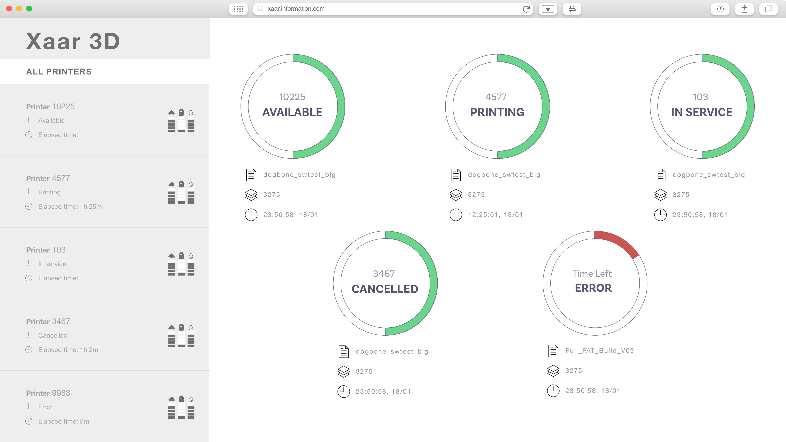
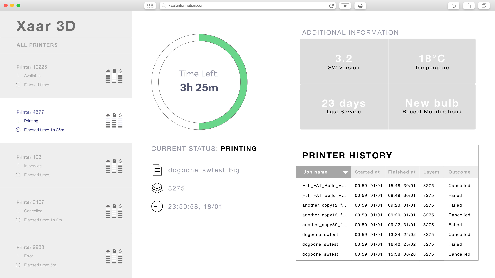
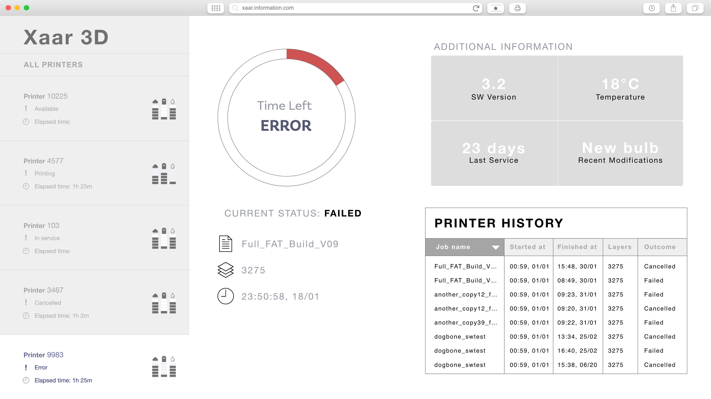
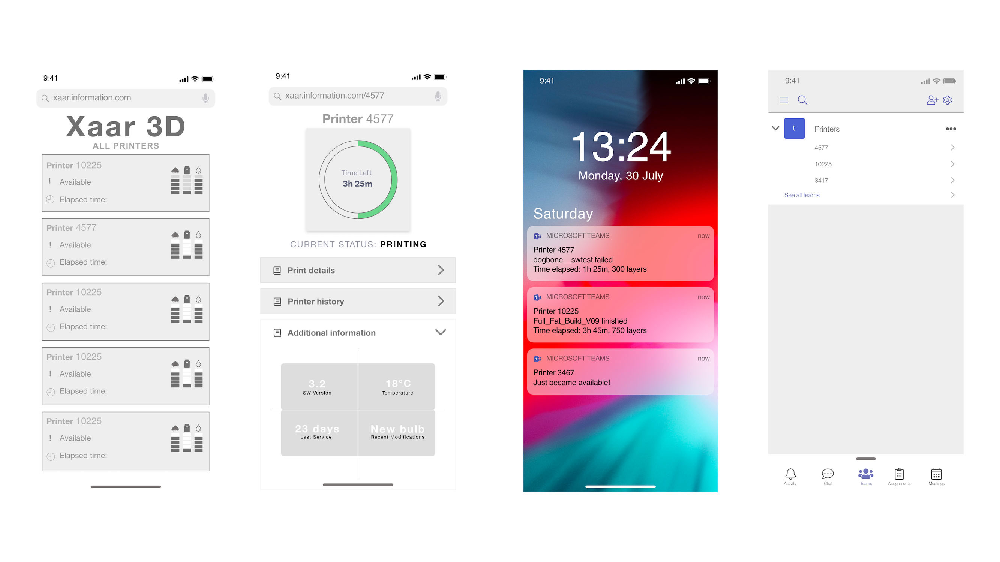
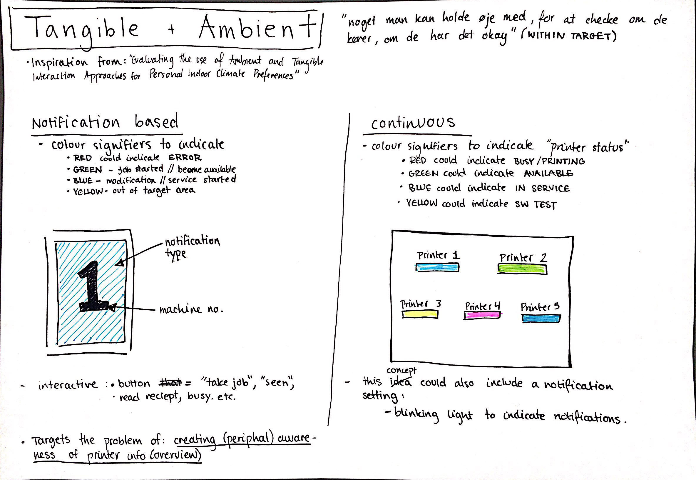
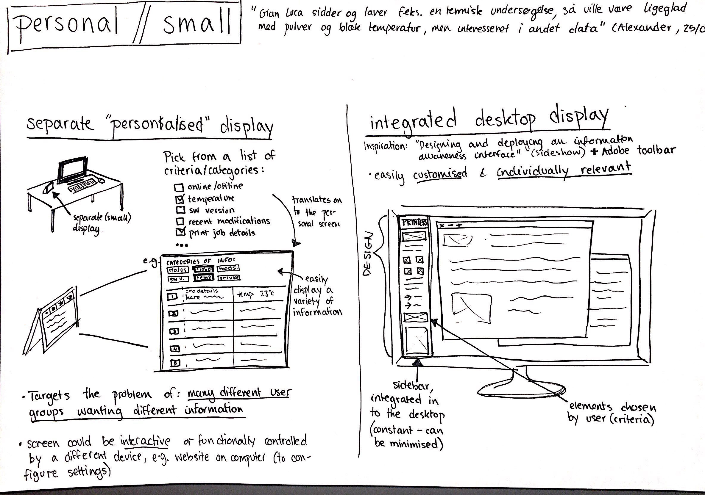

A Case Study: Designing for Timely Awareness [2019]
Bachelor project. In partnership with Xaar3D.
In an digital age, technologies can add stress to our lifestyles by producing more outlets for information than we can cope with or really need. This can create challenges concerning the sharing of information and feedback, coordinating activities, and gaining knowledge of other people’s current activities. Now the task is to create a system that makes these challenges easier and to relieve the stress many experience from being overexposed to information.
This project is a report on a user-centred concept development process that tackles creating timely awareness on shared resources, i.e. 3D printers, in a shared workspace. The design process included three encounters, consisting of interviews and design workshops. The research was conducted through a range of methods, including but not limited to sketching and prototyping as a means of conducting research through design. Over the course of the project, five sketches were created and presented to the users, and one final prototype was conceptually designed and presented to the users in a final workshop. The final workshop worked as a feedback and critique session of the final concept.





